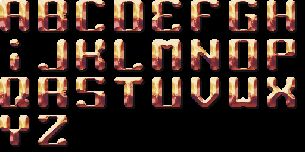
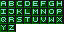
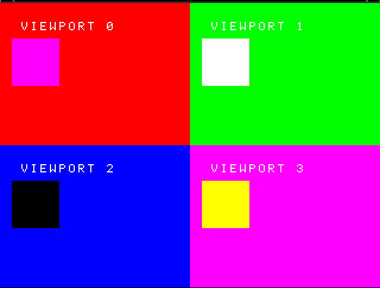
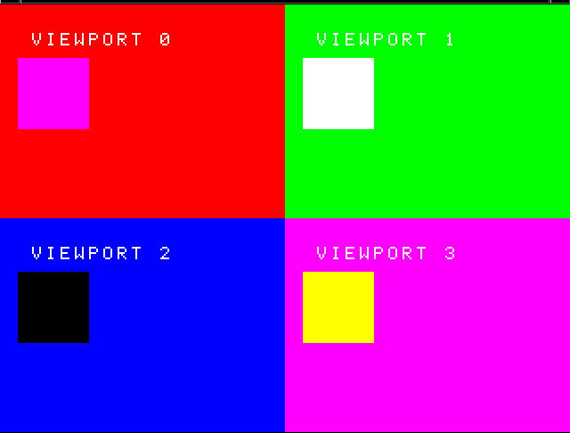

PSYQ Utility Library
Helpful C++ classes for Playstation 1 programming using PSYQ SDK

This will be my development log as I attempt to create a (hopefully!) useful toolkit for PSX programming in C++ using the original PSYQ sdk.
I tried to do something similar a few years ago when I was new to programming - PSX_App on my github - but now that I've had more experience with both C++ and how the PS1 hardware/system works, I'm hoping to make something of higher quality and that can do more than just draw a 3D plane, lol.
The source code will be stored here on bitbucket for now but I think I'll end up using it to replace the repo on github once I feel its a bit more worth sharing.
10/19/2019
I've actually been working on this for a couple of days, but didn't think of keeping a log until today. That being said, I've had some decent progress so far, and have the following classes implemented:
- System
- Responsible for initializing/updating the PSX graphics system and other hardware init needs
- Model
- Represents a generic 3D object which contains vertices, normals, colors, and is drawn by sending
all of its vertices to be drawn as triangles by the System class. TODO - texture support
- Cube
- A 3d object that inherits from Model, just adds default vertices and normals
to the model so it can be drawn instantly without the need for data to be loaded
or anything
- Camera
- Contains a physical location and view matrix representing camera/view coordinates in 3D space. Can
be moved around as an FPS camera currently, by inheriting from the FPS_movable_object class.
- Sprite
- A simple textured quad primitive drawn in 2D by the system class. It isn't drawn in the system
order table and would be simply overlayed on top of any 3D objects drawn in the same loop, because
it is drawn with DrawPrim() (drawn instantly by the GPU) as opposed to AddPrim() (added to packet list
and drawn on next update)
- Light
- Contains a color, direction, and angle of a light to be used by the GPU/GTE; I think?? that it represents
a point light but I'm honestly not a 100% sure; I need to fool around with it more to figure that out...
The System class contains a pointer to one of these which is used globally by all Model classes drawn (or NULL
for no lighting)
What I spent most of today working on, however, was the Pad class (as in joy/directional pad). This class will be used to access the controllers on the playstation. It turns out that getting the analog sticks to work is much tricker than I would've expected!
So PSYQ provides you two ways to access the controllers. The first is much simpler and uses these basic functions:
PadInit()
PadRead()
Pretty straightforward - you initialize the controller system with PadInit() and get the buttons status with PadRead(). This would be great, but there's a slight issue: you can't access the analog sticks or rumble motors this way :(
So instead you need to use this set of functions:
ResetCallback()
PadInitDirect()
PadStartCom()
...
Among other functions. Instead of calling PadRead() each time you want to check controller values, instead the PSX BIOs auto read and store controller data into the buffers you send to PadInitDirect(). The PadStartCom() function tells the BIOs to do this. Since this is done automatically every vertical sync (I think) in the background, concurrency issues are introduced (reading from your data buffers while the BIOs are trying to write to them at the same time) and I kept freezing and crashing the emulator/playstation! Thus I spent the afternoon looking at the PSYQ documentation and code samples. I ended up finding this thread in the PSX dev forums which contained an analog controller demo/example. Compiling and running this example worked fine on its own, but when I tried to integrate it into my project I was still crashing #!%$^&
After some more tinkering, I figured out that the issue was the order I was initializing things with the System and Pad. Basically, the order of important initialization functions I was using was:
ResetGraph()
InitGeom()
ResetCallback()
PadInitDirect()
...
but what I needed was:
ResetCallback()
PadInitDirect()
...
ResetGraph()
InitGeom()
So I was initializing graphics first, when instead I needed to initialize BIOs system callbacks (ResetCallback) and do controller stuff first. The only issue I have now is that the vibration is set on immediately once you start the program and can't stop it, lol. But, I think this should be a pretty easy fix and I'll work on it later.
10/20/2019
I fixed the controller vibration issue mentioned previously. The issue was that the buffer which stores each actuator/motor speed wasn't being initialized, so they had garbage starting values when the program starts which had non-zero values, so the controller library interpreted that as the motor being 'on'.
Motor[0] = 0; // the first actuator, which only has an on/off state (0 or 1)
Motor[1] = 0; // the second actuator, which has a variable speed from 0 to 255
Once that was fixed, I cleaned up the class a little and added accessor functions to get button values and analog stick values. For the analog sticks, the values for each x/y axis is a value from 0 (pushed far left) to 255 (pushed far right). I had the accessor functions offset these values by 128 so instead the client will read analog values in a range from -128 to 127, with 0 being the default middle value. This makes it easier to distinguish between left/right or up/down.
The final steps for the Pad class will be to add vibration accessors for the client and add controller 2 support. After that will be either texture loading or font loading (although I guess font loading would involve loading a font texture anyways, so probably that)
10/21/2019
Added second controller options and vibration function options. Ez-peasy. and also cleaned up the Pad code.
An interesting note from adding controller 2 support is that all of the PSYQ library controller functions use 0 and 16 (0x00 and 0x10) instead of 0 and 1 for specifying which controller the function is using. My guess as to why this is is that the controller number argument is used to represent the 16th bit of the instruction sent to the controller. Meaning, instructions with the 16th bit set to 0/1 are for the first/second controller. Just a theory.
0b1000000000000000 // 16th bit == 1 --> command for controller 2
0b0000000000000000 // 16th bit == 0 --> command for controller 1
10/22/2019
Added basic texture uploading (texture class) and modified Sprite class to use it. Also added bmp2array utility to read 16-bit bmps and print out a C-array with its texture data. Other bit depths like 8bit and 24bit are TODO still. Probably more important is 8 bit in order to preserve VRAM. The 16-bit bmps can be created by exporting ../images from GIMP as bmp, then under 'Advanced Options', select X1 R5 G5 B5 format.
Another TODO is to have an option to enable/disable transparency. The PSX treats any exact black color in a texture (all zeros) as transparent. I think it'd be nice to have an option that automatically slightly increases the brightness of any black colors in the texture that way they aren't drawn as transparent by the psx unless desired.
I made a simple crate texture to test, and can move it around the screen with the directional pads, which can be seen in the screenshots below :)
10/24/2019
Added texture to models (Model_textured, Cube_textured) classes. Moved some of the primitive setting stuff internally to the texture class; as the functionality was more related to textures than models. Finally, sprites and models can now call set_texture to share the same texture, which prevents unnecessary multiple loadings of the same data.
I noticed the test program somtimes is freezing on the PS1 hardware; I'm assuming it's related to the Pad class again. Oh well for now; it happens seemingly infrequently so I'll ignore it.
10/25/2019
Added a Font class, to load bitmaps fonts (../images) and render text with them. This is done by calculating where in the image the appropriate character is based on its input ascii value.
The fonts I used to test are by ZiNGOT on opengameart.org which I reorganized as 8x4 tables (they came entirely horizontal/vertical, which wouldn't fit well in PSX Vram).
 10/29/2019
Have a 3D model of a car partially loaded. Input was a simple car model from here, loaded into Blender and exported as a .PLY file, then I wrote a program to parse the .PLY and print out vertex, normal, and face index arrays to store in a header file. The arrays are set as options to the Model class in the main program. The PSX does have a specific 3d model format (.TMD) so I suppose that might be worth looking into.
I think something might be off with the normals as the result looks kind of funny:
But, at least progress was made :)
10/30/2019
Fixed the orientation of loaded car model from ply2array. The issue was the combination of two factors: first, the car had the wrong orientation to begin with in Blender (it was pointing towards the Y axis, not the Z axis), and second, the Y and Z coordinates needed to be negated in ply2array.c. Now the car points forward and is flat like its supposed to.
11/04/2019
Added lookat camera to hopefully use as a third person perspective. The camera currently follows/targets the car model I've loaded. The camera code was basically just copied from the PSn00bSDK examples. I think I need to convert the two spinning cube coordinates to fixed point format as they both seem to be stuck together now (need to be scaled by ONE aka 4096).

11/07/2019
Added third person rotation to the camera. Technically it needs a bit more tweaking (rotation around the x axis is a bit wonky, but feels generally smooth so its good enough for now). Took me a little while to figure out how the angles work to move the camera around the target like a sphere. These two links were pretty helpful:
- https://www.youtube.com/watch?v=PoxDDZmctnU
- https://gamedev.stackexchange.com/questions/63114/how-do-i-rotate-a-camera-around-the-y-axis-of-the-object-its-looking-at
Additionally, I had to experiment a bit with the PSX 'rcos' and 'rsin' functions in combination with fixed point Q4.12 format to get the right combination of divisors/conversions between regular and fixed point formats. What I found is that basically for each multiplication between two fixed point numbers, you have to divide the result by 2^n (shift right by n). So for two multiplications you have to shift right by n twice. So my final current camera position offsets are calculated as follows:
offsetX = (rsin( yaw ) * radius ) >> 12;
offsetY = (rcos( yaw ) * radius ) >> 12;
offsetZ = (rsin( pitch ) * radius ) >> 12;
where the shifts divide out the n in Qm.n format (12 in this case). The result looks like so:
04/04/2020
It's been a while; I decided to go back and redo the PSYQ toolkit sample tutorials in C++. Hopefully I'll actually finish them this time. My intent is to learn more at the 3D level to try and help with the car thingy I've logged above up until this point. I've followed the dev tutorials up until a certain point previously (apparently 2 years ago!) going off of my github repo: https://github.com/williamblair/PSYQ_cplusplus/
Today I sort of finished the first two:
By sort of I mean they don't move or accept controller input. The background is bright green as I wanted to make sure I could tell the main drawing was working and not frozen or crashed (would show a black screen if this was the case)
04/05/2020
Today I caught up where I had previously gotten with the PSYQ tutorials which was tutorial 5, a textured and shaded cube. Tutorials 3-5 are a cube, a cube with lighting, then a textured cube with lighting. Looking ahead, I see the next sample uses a fog effect, so that'll be interesting
These ones actually take input as you can rotate the cube around with the controller
04/08/2020
Finished tutorial 6: fog/depth queue lighting. This one is basically the same as tutorial 5, except you replace the function call that calculates the color of the cube based on lighting to a different one that uses the interpolation value based on depth. You also have to set the fog color and the distance range to use for fog
04/13/2020
Finished tutorials 7-9: Multiple/Many cubes and world coordinates, seamless scrolling 2d backgrounds and viewports (i.e. what you would use for multiplayer split screens). For tuto 7, each cube shares the same world transformation matrix (how they all seem to be grouped together) but have their own local transformation matrix. Tutorial 8 was more interesting: each background (the window, hills, and city) are actually each made up of 2 ../images. the ../images are drawn next to each other with an offset relative to the current 'x' offset. This offset is updated each frame as the 'x' offset increases or decreases. For example, if the screen width is 256 (which it is here), and the x offset is 100, then the left image is drawn with an x offset of 100 and the right image is drawn with an x offset of the difference (256-100=156). Finally, for tutorial 9, each viewport shares the same display environment (the total screen size = 320x240 pixels), but have their own draw environment (each taking a quarter of the screen). All drawing and primitive coordinates are relative to the current draw environment.
 

04/18/2020
Tutorial 10: scrolling background done. This one emulates a snes mode-7 style psuedo-3d background. How its done is actually just drawing all of the tiles on a real 3D polygon and then rotating it so it looks just right. The trikcy part is offsetting map and uv coordinates properly. Additionally, you can notice that moving forwards and backwards produces a kind of jiggle effect. This is due to the entire world plane shifting to offset when you're moving between tile coordinates (e.g. moving forward/backward by 3 when tiles have a size of 5). Left and right does this as well, however it's not noticable because the far left and right edges are offscreen. It becomes more obvious if you have the background color different from the darkening texture color.

04/19/2020
Did tutorial 11. This one was called a 'mosaic' effect - the sprite is blurred by zooming in on the pixels. How it works is you shrink the size of the texture area used by offsetting the uv coordinates, then stretching the smaller area out to match the sprite size.